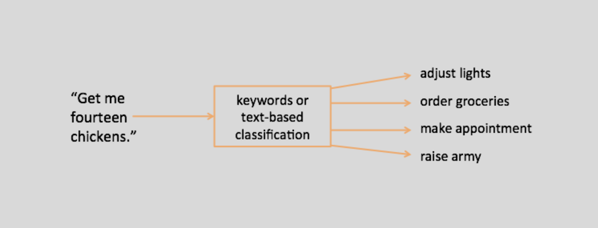

Section 1
Introduction: What is Voice AI?
Artificial Intelligence (AI) technologies continue to embed themselves into our everyday lives. Of these, voice assistants are specifically a subset that get close to imitating human personality and interactions. However, the majority of voice assistants currently being distributed as smart home products have very repetitive, subservient voices that are a consequence of the capitalist intentions behind them. They also do not perform any tasks that make them uniquely useful or assistive which seems contrary to the powerful technology that they are a result of. I argue that voice assistants are better used for non-functional, companionable conversations, because the tasks that they currently perform are redundant and only marginally convenient.
Voice assistants are smart products that enhance the lives of their users by completing a multitude of tasks for them, simply through conversation. They can adapt to the soundscape of the room they are in to create the best ambient audio experience. They stream and play music by voice command without the need of another intermediary device. Reminders and timers can be set and current time anywhere can be learnt by talking to the voice assistant. A variety of information available on the internet can be queried on demand to be accessed. Communication with someone who has a voice assistant from the same company is possible over the internet. At its core, voice assistants are chatbots that are marketed as a way to entertain yourself through conversation, while also making some mundane aspects of everyday living easier.
Section 3
Functional Voice AI

Redundancy
Majority of tasks that voice assistants perform do not provide value significant to the level of progress of the technology that powers them. Using powerful Voice AI capable of conversation for mundane daily tasks is contrived and unnecessarily complex. Redundancy is the idea that voice assistants are not providing anything fundamentally new in the tasks they can complete. The search and playing of music, setting of reminders and conveyal of news are all activities that a person can perform over the internet using a search engine instead of doing so via a voice assistant.
Marginal Convenience
Marginal convenience speaks to the level of effort required for a person to complete the same tasks a voice assistant can do for them. Turning off the lights, checking the time and giving someone a call are all tasks that already require minimal effort and the insertion of a voice assistant in this workflow has no real benefit other than the marginally increased convenience for its user.
Section 5
The Design of Voice AI
Voice User Experience
Taking the current state of voice AI into consideration, this paper pursues the question of whether it is more enjoyable for voice assistants to be able to talk without a programmed goal or purpose. If there is purpose behind their speech, it is motivated by the values of entertainment and companionship, as opposed to fulfilling a function. The premise is that such non-functional conversations are likely to be more useful to both the person having them and the progress of the voice assistant. The deliberate design of the experience of interacting with a voice assistant is called voice user experience (VUX). This consists of mapping conversational flows and building the AI so that it can field any possible question relevant to its function. It is the framework that supports a voice assistant’s responses in any conversation and is mainly responsible for their speech habits.

Voice assistants are classified as intention-based agents among the various types of chatbots that are now widespread on the internet. This means that they make the conversation they make based on what they analyze to be the intention of the person speaking with them. They understand language through commands and use their understanding to perform various tasks in the world. Based on whether or not they are equipped to fulfill the commands of their user, they respond differently. However, in either case of being able or unable to perform a task, they remain subservient in the way they speak and do whatever they can to assist their user. Currently the major intents that most voice assistants support include ‘Date and Time’, ‘Intercom’, ‘News’, ‘Search Queries’ and so on.
This begs the examination of another relevant question, what are other kinds of human intent? This paper focuses specifically on the non-functional kind of intent that is arguably stronger as an experience. Examples include ‘Small talk’, ‘Secrets’, ‘Moods’, ‘Companionship’ and so on. This is also considering that the VUX of a voice assistant needs more variety than task-based subservience. What if voice assistants had back-stories? What if they were moody and reacted with you based on their mood? How can they recognise the level of relationship they have formed with a specific person and change the way they speak accordingly. These are all natural aspects of human conversation, but they have not really become facets of Voice AI both due to its relative nascency and technical limitations.
Section 2
Non-functional Experiments
Artists and designers have been using AI tools to create more unusual experiences. Open source tools such as GPT and freely available Natural Language Processing (NLP) models have provided them with the tools they need to reimagine VUX as it currently is. Through this paper, I shall be presenting three examples of successfully unusual voice assistant artistic experiments to argue that non-functional assistants provide more value than their current functional counterparts. These are LAUREN, the human who masqueraded as a voice assistant, Garden Friends, a blob that encourages you to grow virtual trees in its garden, and Cloud Theory, a game where you converse with a voice assistant about clouds in the sky.
Examples of Companionable AI
Lauren
LAUREN is an experiment by artist Lauren McCarthy where she performed all the tasks of a voice assistant for consenting families. She presented the idea that as a human, you can be more understanding of the needs of humans and that voice assistants are close enough to us in our daily life where they know us intimately through our lived experience. One of the primary benefits of Voice AI is its lack of needing any rest and personal maintenance which reduces the effort it needs to take to assist us. Developing contextual understanding and cultivating empathy for its users will help it become better at its job of providing assistance.
Find more information about this experiment on the artist's website: https://lauren-mccarthy.com/LAUREN

Garden Friends
Garden friends in an Augmented Reality (AR) experience by artist Nicole He made for Google’s Everyday Experiments series. You play the role of a person helping a blob grow its garden in AR. Your conversational tone affects the growth of the trees, by insulting them they shrivel and dry up, while by praising and supporting them, they grow in impressive ways. This project is a way to subconsciously encourage humans to be kind to trees, but it also demonstrates how AI has become capable enough to discern sentiment through a technique known as sentiment analysis.
Find more information about this experiment on the artist's website: https://experiments.withgoogle.com/garden-friends
Cloud Theory
Cloud Theory is a project by Colleen Macklin, part of a broader series known as the Machine Unlearning Project, that thinks about how AI might be capable of having fun. I have contributed to this project which is an artificial companion that provides generative musings to you based on clouds you point at in an artificial sky. This project demonstrates narrative systems and how the sentences that a voice assistant speaks might be connected to what it has previously spoken before, simulating a personality for it. It also showcases the use of voice where based on the companion that you choose to take with you to watch clouds, you can get different musings about the same cloud, playing with the idea of voice AI with differing personalities through a technique called Tuning.
Find more information about this experiment on the artist's website: https://www.colleenmacklin.com/clouds
Section 4
Conclusion
Voice assistants are capable of more nuanced speech, especially as NLP technology continues to evolve; which would make them better companions and equip them to be more valuable to their users. These experiments are examples of successful companionable voice assistants that I believe are thinking differently about what an AI can provide to the human experience. Voice AI technology is another part of how technology interweaves with human life and this paper presents a way for it to do so more naturally and organically.